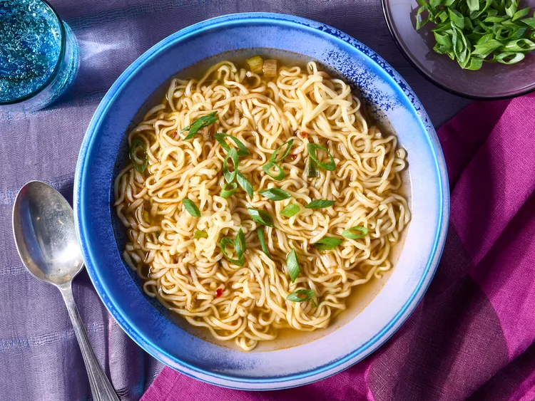

Home
Ramen Noodle Soup

Description
An easy to make and delicious ramen soup filled with ginger, soy sauce, sesame, and chili oil.
Ingredients
- 3.5 cups vegetable broth
- 1 package ramen noodles with dried vegetables
- 2 teaspoons soy sauce
- 1/2 teaspoon chhili oil
- 1/2 teaspoon minced fresh ginger root
- 1 teaspoon sesame oil
- 2 green onions, sliced
Steps
-
Combine broth and noodles in a medium saucepan; cover and bring to a boil over
high heat, stirring to break up noodles
-
Reduce heat to medium and add soy sauce, chili oil, and ginger. Simmer, uncovered
for 10 minutes.
-
Stir in sesame oil
- Garnish with green onions and serve.